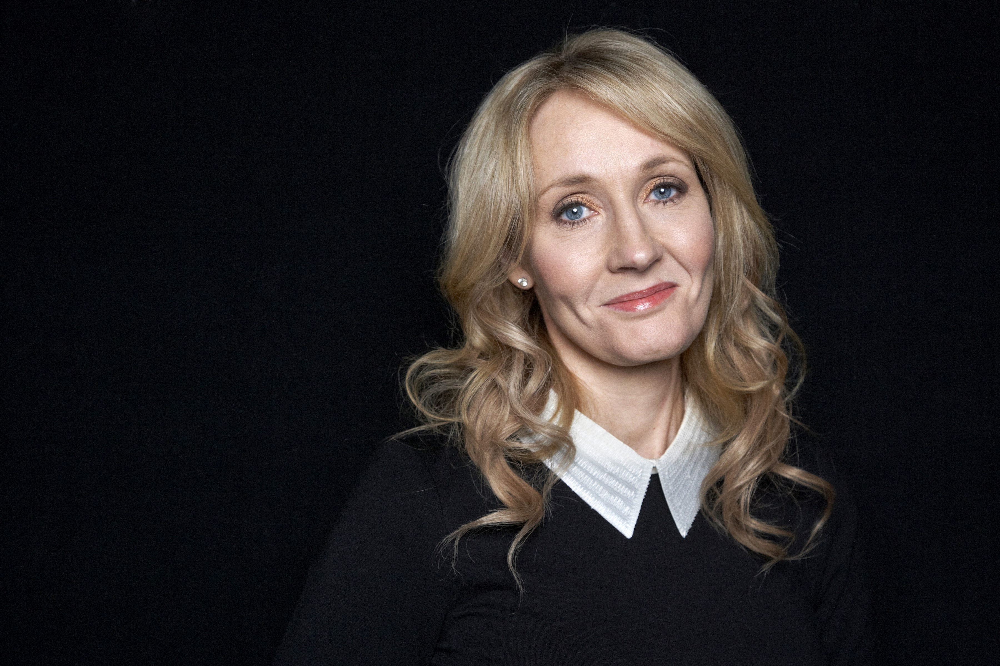

De auteur
De schrijfster van de bekende Harry Potter boekenreeks is J.K.Rowling. Haar volledige naam is Joanne Rowling en de initiaal K staat voor haar overgrootmoeders naam. Joanne Rowling was niet onbekend met schrijven. Ze schreef al sinds haar kindertijden. Haar allereerste verhaal ging over een konijn. Na twee decennia's heeft ze met succes het eerste Harry Potter boek geschreven. Dat was nog geen probleem. Totdat ze naar vrijwel alle uitgeverijen van London ging om haar manuscript te tonen. Na 12 keer afgewezen te worden door diverse uitgeverijen, werd ze uiteindelijk door de 13e opgeroepen tot een gesprek. En de rest was geschiedenis.
Sindsdien heeft ze zeven boeken uitgebracht en een spin-off reeks geschreven.
''Imagination is the foundation of all invention and innovation''
JK Rowling
Robert Galbraith
J.K.Rowling heeft naast Harry Potter een thriller boekenreeks geschreven onder de pseudoniem Robert Galbraith. De boeken gaan over een detective die een moordzaak moet zien op te lossen.
Heden
Vandaag de dag is J.K.Rowling vooral werkzaam als scriptschrijver voor de bekende spin-off reeks van de Harry Potter verhalen, namelijk Fantastic beasts.